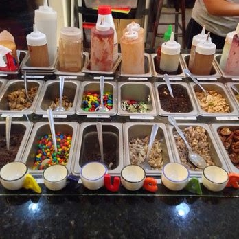

HISTORIA DE HELADOS CAZUZ ICE-CREAM
HISTORIA DE HELADOS CAZUZ ICE-CREAM 

Ubicada en el La ciudad del El Alto de la zona Villa Esperanza, fue fundada en octubre de 2011 como un helado artesanal y boutique de sorbete. Inspirado por las diversas culturas, nuestro clima subtropical y una pasión por el sabor latino, creamos nuestros productos de confitería de helado utilizados para hacer, con ingredientes de máxima calidad y un deseo de crear sonrisas en caras de los amigos. sabores de helado y sorbete de Azucar utilizan alta calidad, todos los ingredientes naturales. Compramos nuestra mamey rojo rubí por la calle en el puesto de frutas Los Piñarenos y nuestros dulces maduros platano encontramos en El Nuevo Siglo tienda de comestibles preparados a mano. Siempre que sea posible, utilizamos cultivados localmente, frutas y verduras de temporada de los mercados de agricultores y productores de las provincias. Abuela (Lourdes) era una persona muy colorido con una gran determinación. El nació y se crió en la provincia Larecaja y se casó con mi abuela (Carlos) que era un ingeniero de ingenio. Aquí es donde empezó su aventura con helado. Ella vivió en toda América Central y del Sur, siempre en movimiento debido al trabajo de nuestro abuelo. Estaba decidida a hacer el helado de cada fruta tropical que se encuentra a lo largo de sus viajes.
el amor de mi abuela para las variedades de sabores tropicales y helados parece haber sido tatuado en mi alma ! Podemos hacer casi cualquier cosa en el helado gracias a nuestra formación en la Universidad y en el Instituto. El concepto de nuestra tienda de helados salía del amor por mi abuela y una admiración para la zona Villa Esperanza y para toda la ciuda y lo que representa. Siempre hay un zumbido en el aire en nuestro nuevo vecindario . Siento que hemos vuelto a nuestras raíces . Un lugar que nunca me di cuenta estaba siempre allí esperando por nosotros . Estamos donde pertenecemos y estamos tan contentos de haber tenido la suerte de ser capaz de seguir la pasión de nuestra abuela . Azucar Ice Cream Company hace que el helado y sorbete de sabores diaria , sin dejar de desafiar nuestra creatividad con nuevos sabores tropicales y el esfuerzo de traer placer a las caras de nuestros clientes . Muchas Gracias por su visita - esperamos verte en la tienda !
La preparación de los helados por aquel entonces era tan complicada que sólo lo podía tomar la nobleza. Todos sabemos a qué velocidad se derrite un helado y al no disponer de frigoríficos, congeladores o heladeras, era toda una aventura conservar un helado hasta que un rey o rico mercader lo pudiera saborear. Para hacer un helado y conservarlo se necesita frío, así que pagaban a portadores para subir a las montañas a coger nieve, y una vez en casa la depositaban en profundos pozos tapándola con paja. Con esta nieve podían enfriar bebidas o mezclarla con zumos para hacer sorbetes.